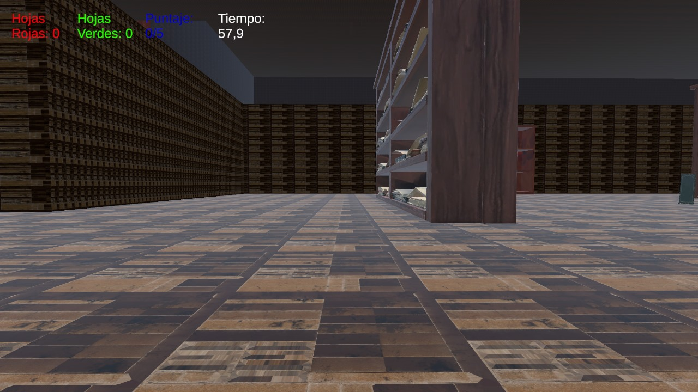

Estudiante de Licenciatura de Producción y desarrollo de videojuegos.
Estudiante de Violin
Futuro streamer
Este videojuego fue hecho por mi compañera Agustina Leiva y yo, en el cual se puede ver una casa destruida por un monstruo que se encuentra en una cueva cercana.
https://drive.google.com/file/d/1BGuB3C_oYITZ8jxq3e9p90bQG-oWgzNf/view?usp=sharing
Videojuego que trata sobre un libro que se cae de la mochila de un alumno, este pierde parte de sus paginas por lo cual hay que hallarlas.
las hojas se dividen entre 8 paginas verdes y 14 rojas, hay que hallar cinco hojas verdes antes de que termine el tiempo.
https://drive.google.com/file/d/1KUO8H0SIuW1ZNU5z3k4Zc-m-GU9rlVQC/view?usp=sharing
